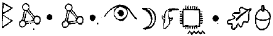
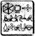

HAREKÂT ODASI
FOALY düşünüyordu. Sürekli düşünüyordu. Beyni mikrodalga fırının içinde patlayan mısırlar gibi düşünce üretiyordu. Ama hiçbirini kullanamıyordu. Hatta Julius’u arayıp karman çorman planlarıyla başını bile şişiremiyordu. Tek silahı Fowl’un dizüstü bilgisayarıymış gibi duruyordu. Bu, elinde bir kürdanla bir trolle karşı savaşmaya benziyordu.
Aslında insanın bilgisayarı hiç de fena sayılmazdı, en azından tarih-öncesi bir türe göre. E-posta işe yaradığını göstermişti bile. Tabii ki yanıt verecek canlı birilerinin bulunması şartıyla. Ayrıca kapağında görüntülü-görüşme yapmayı sağlayan küçük bir kamera da vardı. Bu, Çamur Adamların yeni keşfetmiş oldukları bir şeydi. Kısa zaman öncesine kadar insanlar sadece yazışarak ya da ses dalgaları sayesinde birbirleriyle iletişim kurabiliyorlardı. Foaly onları ayıpladı, vahşiler. Ama bu kamera çeşitli filtre seçenekleriyle oldukça kaliteli sayılırdı. Foaly emin olmasa, birilerinin peri teknolojisini dışarı sızdırdığına yemin edebilirdi.
Foaly dizüstü bilgisayarı toynağıyla döndürerek, kamerayı duvardaki ekranlara doğru çevirdi. Hadi, Cudgeon, diye düşündü. Bak kuş çıkacak.
Uzun süre beklemesi gerekmedi. Birkaç dakika içinde ekranlardan biri titreşerek aydınlandı ve Cudgeon’ın beyaz bayrak sallayan görüntüsü belirdi.
“İyi bir ayrıntı,” diye belirtti Foaly, alaycı alaycı. “Bence de” dedi elf, flamayı abartılı hareketlerle sallayarak. “Buna daha sonra ihtiyacım olacak.”
Cudgeon bir uzaktan kumanda düğmesine bastı. “Sana dışarıda olanları göstermeme ne dersin?”
Ekranlar karardı ve harekât odasının güvenlik sistemini kırmaya çalışan, çok sayıda telaşlı teknik elemanın görüntüleri belirdi. Birçoğu odanın çeşitli arabirimlerindeki bilgisayar algılayıcılarını hedef almışlardı, bazıları ise eski yöntemi kullanmayı yeğliyorlardı. Yani algılayıcılara koca çekiçlerle vurmayı. Hiçbirinin şansı yoktu.
Foaly yutkundu. Kapana kısılmış bir fare gibiydi. “Neden bana planını açıklamıyorsun, Briar? Güç delisi, kötü adam rolündekinin her zaman yaptığı da bu değil mi zaten?” Cudgeon döner sandalyesine rahatça oturdu. “Elbette, Foaly. Ama bu senin kıymetli insan filmlerinden biri değil. Burada son anda hızla içeri girip seni kurtaracak bir kahraman yok. Short ile Root öldüler bile. İnsan dostla
rı da öyle. Ne bir erteleme, ne de bir kurtarma. Mutlak ölüm.”
Foaly üzüntü duyması gerektiğini biliyordu ama tek hissedebildiği nefretti.
“Durum artık iyice ümitsizleşince, silah denetimini yeniden LEP’e vermesi için Opal’e talimat vereceğim. B’wa Kell bayıltılıp etkisiz duruma getirilecek ve tüm bu olaydan sen sorumlu tutulacaksın, tabii ki hayatta kalmayı başarabilirsen eğer.”
“B’wa Kell kendine geldiğinde, seni ele verecektir.” Cudgeon parmağını salladı. “Bu işin içinde olduğumu çok az sayıda kişi biliyor ve onlarla bire bir ilgileneceğim. Bu kişiler Koboi Laboratuarlarına çağırıldılar bile. Kısa süre içinde ben de onlara katılacağım. DNA topları, goblin tellerini kabul etmemek üzere ayarlandı. Zamanı geldiğinde onları harekete geçireceğim ve tüm birliklerin bilinçleri silinecek.”
“Ve sanırım, Opal Koboi de imparatoriçeniz olacak?” "Tabii,” dedi yüksek sesle Cudgeon. Ama hemen ardından, güvenli kanaldan konuştuklarından emin olmak için uzaktan Yarbayın klavyesini çalıştırdı.
“İmparatoriçe mi?” diye soludu. “Saçmalama, Foaly. Tüm bu sıkıntılara, gücümü bir başkasıyla paylaşmak için katlandığımı mı sanıyorsun? Yo, hayır. Tüm bu zırvalar biter bitmez, Bayan Koboi çok talihsiz bir kazaya kurban gidecek. Belki de birkaç talihsiz kazaya.”
Foaly dikleşti. “Basmakalıp sözler kullanıyor olabilirim, Briar ama bu iş yanma kâr kalmayacak.”
Cudgeon’ın parmağı bitirme düğmesinin üzerinde gezindi. “Kalmasa da,” dedi sevimli bir sesle “sen o anın tadını çıkarmak için hayatta olmayacaksın nasılsa. Ve ardından, Foaly'yi endişe içinde odada bırakarak gitti. Ya da Cudgeon öyle sandı.
Foaly masanın altındaki dizüstü bilgisayara uzandı. "Kes,” diye mırıldandı kamerayı durdurarak. “Çak millet, bu iş buraya kadar.”
E116 ÇAVLANI
Holly mekiğin kıskaçlarını kullanılmayan bir çavlanın duvarına kenetledi.
“Yaklaşık otuz dakikamız var. İç algılayıcılar yarım saat içinde bir alevin buraya doğru geleceğini bildiriyorlar ve hiçbir mekik bu tür bir sıcaklığa dayanacak güçte inşa edilmemiştir.
Basınç odasında toplanıp birlikte bir plan yapmaya koyuldular.
“Koboi Laboratuarlarına zorla girip LEP silahlarının denetimini yeniden ele geçirmemiz gerek, dedi Yarbay.
Mulch koltuğundan kalkmış, kapıya doğru ilerliyordu. “Bu olanaksız, Julius. Ben gittiğimden bu yana orası yenilendi. DNA kodlu topları olduğunu-duydum.”
Root cüceyi ensesinden yakaladı. “Birincisi, bana Julius deme. Ve ikincisi, sanki bir seçim hakkın varmış gibi konuşuyorsun, mahkûm.”
Mulch ona ters bir bakış fırlattı. “Bir seçim hakkım var, Julius. Küçük, sevimli bir hücrede hapis cezamı çekebilirim. Beni ateş hattına yerleştirmekle vatandaşlık haklarımı çiğnemiş oluyorsun.”
Root’un yüzünün rengi soluk pembeden, şalgam moruna döndü. Vatandaşlık haklan!” dedi tükürür gibi.
Bana vatandaşlık haklarından söz ediyorsun demek! Tam sana göre bir şey, değil mi?”
Sonra garip bir biçimde sakinleşti. İşin aslı, neredeyse mutluymuş gibi görünüyordu. Yarbayı yakından tanıyanlar, kendisi mutlu olduğunda bir başkasının aşırı derecede mutsuz olmak üzere olduğunu bilirlerdi.
“Ne?” diye sordu Mulch, kuşku içinde.
Root zararlı mantar purolarından birini yaktı. “Yok bir şey. Yalnızca haklı olduğunu düşündüm, hepsi bu.” Cüce, gözlerini kıstı. “Haklı mıyım? Sen, tanıklar önünde benim haklı olduğumu söylüyorsun.”
“Kesinlikle öylesin. Seni ateş hattına yerleştirmek, kitaptaki her hakkı çiğnemek demek olur. Bu yüzden sana önermek üzere olduğum harika anlaşmayı bir kenara bırakacağım ve hapis cezana birkaç yüzyıl daha ekleyip seni en güvenli yere göndereceğim.” Root durup Mulch’ın yüzüne bir duman bulutu üfledi. “Howler Tepesine.” Yanaklarını örten çamurun altından, Mulch’ın beti benzi attı. “Howler Tepesi mi? Ama orası...”
Bir goblin hapishanesi,” diye tamamladı Yarbay. “Biliyorum. Ama senin gibi kaçma tehlikesi olan biri için yönetim kurulunu bir ayrıcalık yapmaya ikna edeceğimden eminim.”
Mulch yumuşak, döner koltuğa yıkıldı. Bu iyi değildi. Son kez goblinlerle aynı hücreyi paylaştığında hiç eğlenmemişti. Ve üstelik de bu, Polis Plaza’daydı. Genel nüfusun içinde bir hafta bile dayanamazdı.
“Pekala, anlaşma ne?”
Artemis hayranlıkla gülümsedi: Yarbay Root göründüğünden daha zekiydi. Ama zaten öyle olması gerekiyordu.
“Artık ilgileniyorsun demek?”
“Olabilir. Ama söz vermiş olmayayım.”
“Pekala, anlaşma şu. Bir kerelik bir teklif. Pazarlık etmeyi deneme bile. Bizi Koboi Laboratuarlarına sokuyorsun ve bu iş bittiğinde, ben sana kaçman için iki günlük bir avans veriyorum.”
Mulch yutkundu. Bu iyi bir teklifti. Başları epeyce belada olmalıydı.
POLİS PLAZA
Polis Plaza’da işler kızışıyordu. Canavarlar kelime manasıyla tam kapıdaydılar. Yüzbaşı Kelp merkezler arasında koşup adamlarını sakinleştirmeye çalışıyordu.
“Merak etmeyin millet, Yumuşakburunlarla bu kapılardan geçemezler. Füzeden başka bir şey işe yaramaz — Tam o sırada inanılmaz bir güç ana kapıları parçaladı, tıpkı bir çocuğun kesekâğıdım patlatması gibi. Dayandılar. Ama güçbela.
Cudgeon manevra odasından koşarak çıktı. Göğsündeki yarbay işaretleri pırıl pırıl parlıyordu. Konsey’in onu görevine geri getirme kararıyla, LEP tarihinde yarbaylığa iki kez atanan tek yarbay unvanına sahip olmuştu.
“Bu da neydi böyle?”
Bela dışarının görüntüsünü ekranlara yansıttı. Omzuna geniş bir boru almış bir goblin kapının önünde duruyordu.
Bir tür bazuka, sanırım Yumuşakburun toplarının eski geniş kalibrelilerinden biri.”
Cudgeon alnına bir tokat şaplattı. “İnanmıyorum. Hepsi yok edilmiş olmalıydı. Kahrolası Foaly! Tüm bu silahları burnumun dibinde gizlice dışarı çıkarmayı nasıl da başardı?”
Kendine haksızlık etme,’ dedi Bela. “Hepimizi kandırdı.”
Buna daha ne kadar dayanabiliriz?”
Bela omuz silkti. “Fazla değil. Birkaç atış daha. Belki de yalnızca tek bir füzeleri vardı.”
Ah şu ünlü son sözler! Kapı bir kez daha sarsıldı; mermer sütunlardan kopan koca parçalar yere yuvarlandı. ,
Bela toparlanıp yerden kalktı, büyü alnındaki derin yarayı iyileştirmeye başlamıştı. “Sıhhiye, yaralılara bakın. Silahlarımız hâlâ şarj olmadı mı?”
Grup taşıdığı iki elektrikli tüfeğin ağırlığından topallayarak ilerledi. “Kullanıma hazır, Yüzbaşı. Otuz iki silah. Her biri yirmi atışlık.”
“Pekala. Onları yalnızca, iyi nişancı-perilere ver. Ben emir verinceye kadar, bir atış bile yapılmayacak.
Grub başıyla onayladı, yüzü asık ve solgundu. “Tamam, Onbaşı, şimdi onu dışarı çıkart.”
Kardeşi onu duyamayacak kadar uzaklaştığında, Bela sessizce yarbay Cudgeon’la konuştu. “Sana ne söyleyeceğimi bilemiyorum, Yarbay. Atlantis tünelini havaya uçurdular, bu yüzden oradan yardım alamıyoruz. Zamanı durdurmak için çevrelerini saracak bir beşgenimiz yok. Etrafımız tamamen kuşatıldı, sayıca ve silahça bizden üstünler. B’wa Kell kapıları havaya uçurursa, birkaç saniye içinde her şey biter. Harekât odasına girmemiz gerek. Herhangi bir gelişme var mı?”
Cudgeon başını olumsuzca salladı. “Teknik elemanlar uğraşıyor. Yüzeyin' her köşesine yönlendirilmiş algılayıcılarımız var. Giriş kodunu bulabilirsek, bu kesinlikle şansa olacaktır.”
Bela yorgun gözlerini ovuşturdu. “Zamana ihtiyacım var. Onları engellemenin bir yolu olmalı.
Cudgeon ceketinin içinden beyaz bir bayrak çıkarttı. “Bir yolu var...”
“Yarbay! Dışarı çıkamazsınız. Bu intihar demek olur. “Olabilir,” diye onayladı yarbay. “Ama gitmezsem, birkaç dakika içinde hepimiz ölürüz. En azından bu şekilde, Harekât odasının kapısını açmaya çalışmak için birkaç dakikamız daha olur.”
Bela düşündü. Başka yolu yoktu. ‘ Pazarlık edecek neyimiz kaldı ki?”
Howler Tepesindeki mahkûmlar. Belki şartlı tahliye konusunda görüşebiliriz.”
“Konsey bunu asla kabul etmez.”
Cudgeon dimdik ayağa kalktı. “Şu an siyaset yapma zamanı değil, Yüzbaşı. Harekete geçme zamanı.”
Açıkçası, Bela şaşkındı. Bu onun tanıdığı Briar Cudgeon değildi. Birisi bu periye ilik nakli yapmış olmalıydı.
Artık yeni atanmış yarbay, yakasındaki rütbe demetini hak edecekti. Bela bir heyecan dalgasının göğsünü sardığını hissetti. Bu şimdiye kadar, Briar Cudgeon’la ilgili olarak, asla hissetmediği bir duyguydu. Adı saygıydı.
Giriş kapısına bir delik aç,” diye emretti yarbay, çelik gibi bir sesle. Foaly bunu kameradan izlemeye bayılacaktı. Ben bu sürüngenlerle konuşmaya gidiyorum.” Bela emri gerekli yere iletti. Bu işten paçalarını kurtarabilirlerse, yarbay Cudgeon’ın ölümünden sonra Altın Meşe Palamuduyla ödüllendirileceğini biliyordu.
BİLİNMEYEN ÇAVLAN, KOBOİ LABORATUARLARININ AŞAĞISI
Atlantis mekiği geniş bir çavlanın içinde yavaşlayarak, duvarlara sıkıca yapıştı, hem de geminin boyasını sıyıracak kadar sıkıca.
Artemis başını yolcu bölümünden uzattı.
“Bu gerçekten de gerekli mi, Yüzbaşı? diye sordu Artemis, bir milyonuncu kez ölümden kıl payı kurtulduktan sonra. “Yoksa amacın çocukça hava atmak mı?”
Holly göz kırptı. “Sence çocuğa benzer yanım mı var, Fowl?”
Artemis hiç benzer yanı olmadığını itiraf etmeliydi. Yüzbaşı Short tehlikeli sayılabilecek bir güzelliğe sahipti, kara dul örümceğinin güzelliğine. Artemis yaklaşık sekiz ay sonra ergenlik çağma kavuşacağım ve o zaman Holly ye farklı bir gözle bakacağını tahmin ediyordu. Ayrıca Holly’nin seksen yaşında olması da bir o kadar iyiydi.
“Mulch’ın buralarda bir yerlerde olduğunu iddia ettiği çatlağı bulabilmek için yakın geçerek yüzey taraması yapıyorum,” diye açıkladı Holly.
Artemis başını salladı. Cüce’nin kuramı doğru olamayacak kadar inanılmazdı. Mulch’ın açıklayıcı konuşmasını dinlemek için geminin kıç tarafına döndü.
Cüce arkadan ışıklandırılmış bir duvar panelinin üzerine üstünkörü bir grafik çizmişti. Gerçeği söylemek gerekirse, çizim konusunda ondan daha yetenekli şempanzeler vardı. Üstelik ondan daha az iğneleyiciydiler. Mulch işaret sopası olarak bir havuç kullanıyordu -daha doğrusu birkaç havuç. Cüceler havucu severlerdi.
“Bu, Koboi Laboratuarları,” diye mırıldandı, dolu ağzının içinden.
“Bu mu?” diye çığlık attı Root.
“Bunun birebir bir plan olmadığının farkındayım, Julius.
Yarbay sandalyesinden fırladı. Tam olarak emin olmasaydınız, olayın içine cüce gazı karıştığına yemin edebilirdiniz. “Birebir bir plan mı? Tanrı aşkına bu bir dikdörtgen!
Mulch hiç rahatsız olmamıştı. “Bu önemli değil. Önemli olan bu bölüm.”
“Şu titrek satır mı?”
“Bu ince bir çatlak,” diye karşı çıktı cüce. “Bunu herkes anlayabilir.”
“Belki çocuk yuvasındaki herkes. Demek, bu bir çatlak, ne olmuş yani?”
Zekâ gerektiren de bu. Görüyor musun, bu çatlak genellikle orada değildir.”
Root bir kez daha havayı boğmaya başlamıştı. Bu son zamanlarda sıkça yaptığı bir şeydi. Ama konu birden Artemis’in ilgisini çekti.
Bu çatlak ne zamanlar ortaya çıkıyor?”
Ama Mulch buna doğru düzgün bir yanıt vermedi. “Biz cüceler kayalar hakkında çok şey biliriz. Yüzyıllardır onları kazdığımız için olsa gerek.” Root parmaklarını vızıltı değneğine vurmaya başladı. “Perilerin farkında olmadıkları şey, kayaların canlı olduklarıdır. Soluk alırlar.”
Artemis başıyla onayladı. “Tabii. Isı genleşmesi.” Mulch bir zafer kazanmışçasına havucunu ısırdı. “Kesinlikle. Ve tabii ki tam tersi de geçerli. Soğuduklarında büzülürler.” Artık Root bile dinliyordu. “Koboi Laboratuarları sağlam bir çekirdek kabuğu üzerine inşa edilmiş. Kayalar üç mü uzunluğunda. Ses dalgalarıyla çalışan savaş miğferleri olmaksızın içeri girmek olanaksız. Ve Opal Koboi’nin onları fark edebileceğini düşünüyorum.”
“Peki bunun bize ne gibi bir yararı var?”
“Bu kaya soğuduğunda, içinde bir çatlak oluşuyor.
Buranın inşaatı sırasında binanın temellerinde çalışmıştım. Buradan laboratuarların tam altına çıkılıyor. Daha epeyce yolunuz kalır ama en azından içeri girmiş olursunuz.”
Yarbay kuşkuluydu. “Peki nasıl oldu da, Opal Koboi bu yarığı fark etmedi?”
“Ah, ben buna pek yarık demezdim.”
“Genişliği ne kadar?”
Mulch omuz silkti. “Bilmem. Sanırım beş metre kadar. En fazla açıldığında yani.”
“Yine de bu sürekli orada duran bir çatlak için çok geniş sayılır.”
“Sürekli orada değil ki,” diye söze karıştı Artemis. “Değil mi Mulch?”
“Sürekli mi? Keşke olsaydı. Aşağı yukarı diyebilirim ki, yani yalnızca tahmini olarak...”
Root kızmaya başlıyordu. Olayları bir adım geriden izlemek ona göre değildi.
“Arkanı bir kez daha dağlamadan konuş, mahkûm!” Mulch incinmişti. "Kes bağırmayı Julius, sakalımı kıvırttırıyorsun.”
Root kendini toparlayıp sakinleşti.
“Pekala Mulch. Ne kadar?”
“En fazla üç dakika. Geçen defa bunu bir basınç giysisi ve bir çift kanat takarak yapmıştım. Az daha ezilip kızaracaktım.”
“Kızarmak mı?”
“Bırak tahmin edeyim,” dedi Artemis. “Çatlak yalnızca, kaya yeterince büzüldüğünde açılıyor. Bu çatlak çavlanın duvarındaysa eğer, en serin zaman alevin hemen öncesi olacaktır.”
Mulch göz kırptı. “Çok akıllıca, Çamur Çocuk. “Kayalar seni kapmazsa, magma kapar.”
Hoparlörlerden Holly’nin sesi yükseldi. “Bir görüntü yakaladım. Bir gölge olabilir ya da yalnızca çavlan duvarındaki bir çatlak.”
Mulch dans etmeye başladı, kendiyle gurur duyuyordu. “Hadi Julius, söyleyebilirsin artık. Yine ben haklıydım! Bana borçlusun, Julius, bana borçlusun.” Yarbay burun kemerini ovuşturdu. Bu işten yakasını kurtarabilirse, bir daha asla merkezden ayrılmayacaktı.
KOBOİ LABORATUARLARI
B’wa Kell goblinleri Koboi Laboratuarlarının çevresini sarmışlardı. Tepeden tırnağa silahlıydılar ve kana susamışlardı. Cudgeon bir düzine namlunun arasında, apar topar sürükleniyordu. DNA topları şimdilik hareketsizce kulelerin içinde duruyorlardı. Cudgeon, B’wa Kell’in hizmet süresinin dolduğunu hissettiği anda, silahlar yeniden harekete geçirilecekti.
Yarbay zorla bir sığmağa sokuldu ve Opal’le B’wa Kell generallerinin önünde diz çökmeye zorlandı. Askerler uzaklaştırıldıktan sonra, Cudgeon yeniden ayağa kalkmış ve duruma hâkim olmuştu.
“Her şey plana uygun olarak ilerliyor,” diye açıkladı, Opal’in yanma gidip yanağını okşayarak. “Haven bir saate kadar bizim olacak.”
General Scalene ikna olmamıştı. “Elimizde Koboi patlayıcıları olsaydı, çok daha hızlı bir şekilde bizim olurdu.”
Cudgeon sabırla iç geçirdi. “Biz bu yollardan geçtik, General. Aksama sinyalleri tüm neutrino silahlarını etkisiz duruma getiriyor. Patlayıcıları kullanırsan, LEP de kullanabilir.”
Scalene ayaklarını sürüyerek köşeye gidip göz yuvarlarını yalamaya koyuldu.
Tabii ki goblinleri neutrino silahlarından yoksun bırakmanın tek nedeni bu değildi. Cudgeon’ın ihanet etmeye karar verdiği bir grubu silahlandırmak gibi bir niyeti olamazdı. B’wa Kell Konsey’i yok eder etmez, Opal LEP’e gücünü geri kazandıracaktı.
“İşler nasıl gidiyor?”
Opal, Hoverboy’unun içinde döndü, bacaklarını altına kıvırmıştı. “Harika. Ana kapılar... sen anlaşmaya varmak için çıktıktan birkaç saniye sonra yıkıldı.”
Cudgeon sırıttı. “İyi ki çıkmışım. Yaralanabilirdim.”
“Yüzbaşı Kelp elinde kalan güçleri Harekât odasına yönlendirip odanın çevresini kuşattı. Konsey de orada.”
“Kusursuz,” dedi Cudgeon.
Bir başka B’wa Kell generali olan Sputa konferans masasını yumrukladı. Yo, Cudgeon. Hiç de kusursuz değil. Kardeşlerimiz Howler Tepesinde çürüyorlar.”
Sabırlı ol, General Sputa,” dedi Cudgeon, sakinleştirici bir sesle. Elini goblinin omzuna koymuştu. “Polis Plaza düşer düşmez, hiçbir engelle karşılaşmadan Howler Tepesindeki hücrelerin kapılarını açabiliriz.”
Cudgeon için için köpürüyordu. Salak yaratıklar. Onlardan nasıl da nefret ediyordu. Gömlek değiştirirken döktükleri derilerinden yapılmış giysiler giyiyorlardı. İğrençtiler. Cudgeon DNA toplarını yeniden harekete geçirip onları birkaç saatliğine susturmak için can atıyordu.
Opal le göz göze geldi. Opal onun ne düşündüğü biliyordu. Beklenti içinde minnacık dişlerini gösteriyordu. O mükemmel derecede kötü bir yaratıktı. İşte bu yüzden de ortadan kaldırılmalıydı. Opal Koboi ikincil bir görevde asla mutlu olamazdı.
Cudgeon, Opal’e göz kırptı.
“Yakında,” diye geveledi sessizce. “Yakında.”